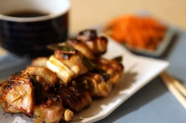

Manto Recipe

How to make manto
First thing first, you need flour mixed with eggs and add grinded meat with different flavors
of spicy dishes pepper garlic etc.
this is Afghan dish which has got global pupolirity and very tasty food
- Flour
- Meat
- water
- garlic
- oil
- eggs
- grind the meat and mix it with eggs and salads
- Make a cookie shape manto and put on a surface seprately
- boil water and put all mantos
- take the mantos out after 20 minutes
- create a suase and pour it on mantoes